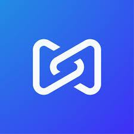
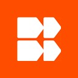

Ben Turner.
Summary
Product Designer with over seven years of experience driving business growth across enterprise, startup, and agency sectors. Known for delivering high-impact interfaces that boost sales and scale operations, while bringing energy and a collaborative spark to team culture.
Experience (7+ years)

Product Designer
September 2025 to Present
Perforce P4 Plan and P4 DAM: planning and digital asset management software for games and media.
- I'm the lead designer for P4 Plan and P4 DAM, handling digital asset management and project planning tools used by major studios including Electronic Arts, Xbox Game Studios, and Meta.
- When front-end engineering capacity dropped by 66%, I wrote production front-end UI code using Claude Code to bridge the gap. This helped increase feature release output by 25% and cut review sessions in half.
- Built custom Claude skills, MCP servers, and Figma plugins to automate design specifications and UI generation. The system won Best Designed at the 2026 company AI hackathon and was adopted by engineering teams across the business. As a result, I was appointed to the companies AI research group to develop new workflows and systems for the design organisation.
- Rebuilt product trial onboarding. This allowed prospects to evaluate the software without complex setups, opening new enterprise sales opportunities. Reducing friction and helping improve the bottom line.
- Redesigned search, navigation filters, and asset previews to resolve severe user bottlenecks caused by reliance on the browser back button.
- Delivered a key feature on P4 Plan called Capacity Planning, which is a unique standout feature that no competitors have - this feature has drawn in high praise from our customers and makes the product standout in a crowded planning tool marketplace.

Product Designer
July 2024 to July 2025
Budibase Open-source low-code for internal apps, automations and AI agents.
- I owned end-to-end product design for Budibase, an open-source, self-hosted platform for building internal apps, automations, and AI agents.
- I overhauled the automations part of the product based on a 25-user qualitative UX research study. As a result I redesigned the step-by-step UI to clearly show data entering and exiting each action, eliminating community complaint threads on automations. This redesign became the foundation Budibase used to build and launch its AI agent product line, a key part of their current product.
- Redesigned it's licensing system, which streamlined onboarding for cloud, self-hosted and air-gapped users.
- Designed enterprise platform features including conditional branching, role-based permissions (read, write, execute), and spreadsheet-style formula calculations.
- Today Budibase is a thriving startup close to profitability that combines workflows, apps, data tables and automations, I helped design the features that transformed into what it is today.
UX Designer
June 2021 to July 2024
DawsonAndrews Product design agency.
- At DawsonAndrews, I worked on so many different projects, some key highlights were leading design for CityFibre, a major UK telecom infrastructure provider competing with BT Openreach and Virgin Media. The project's success directly won new accounts like Hyperoptic, expanding agency revenue and enabling the team to hire 10 additional employees.
- Worked with public sector clients like VisitBelfast and the GAA.
- Redesigned the CityFibre homepage, B2B backend portal in record time with a measured 2x in user satisfaction increase after the redesign based on extensive user research studies.
- Designed and helped launch a startup, SportsWork from scratch across branding and product design. It transitioned to become an independent, profitable business.
- Created and managed enterprise design systems for clients including CityFibre and GSMA, establishing token structures and component libraries.
- Proudly mentored junior and mid-level designers and helped grow the design team out from 2 to 6 designers.
More experience on linkedin.com/in/benturnerwork.
Skills
Product & UX Design: Product ownership, Interaction design, Design systems, Tokens, Typography, Visual hierarchy, Micro-interactions, Information architecture, Usability testing, Accessibility (WCAG / AA), Systems thinking, First principles, Product sense, High agency, Data-driven UX.
Frontend: Production code, Near-production prototypes, CSS, Tailwind CSS, HTML, Git, Component-driven development.
AI: Cursor, Claude Code, Claude skills, MCP servers, Figma Make, Agentic workflows, Designing for agents, Human-in-the-loop UI, Encoding design systems for AI, Research synthesis, AI-assisted prototyping and implementation.
Tools: Figma, Maze, Jira, Local development environments.
Education
BDes (Hons) Interaction Design, Ulster University, First Class Honours (2017 to 2021)
Extended Diploma in Interactive Media, Northern Regional College. Distinction*, Distinction*, Distinction (2015 to 2017)
Hobbies
Martial arts since 2007 (BJJ purple belt, Japanese Jiu-Jitsu black belt, Judo green belt). Warhammer 30k, gym, fishkeeping, karting, travel, and dogs.